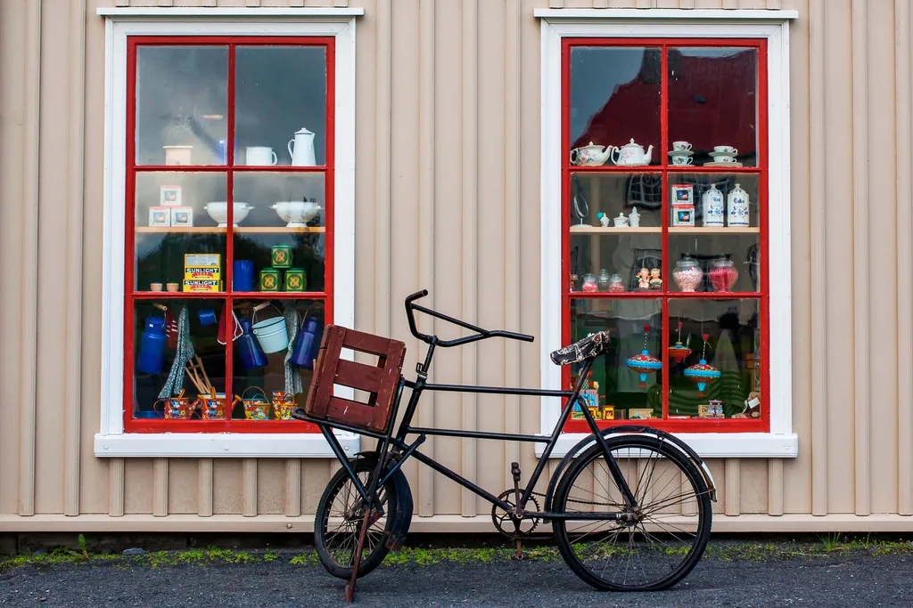
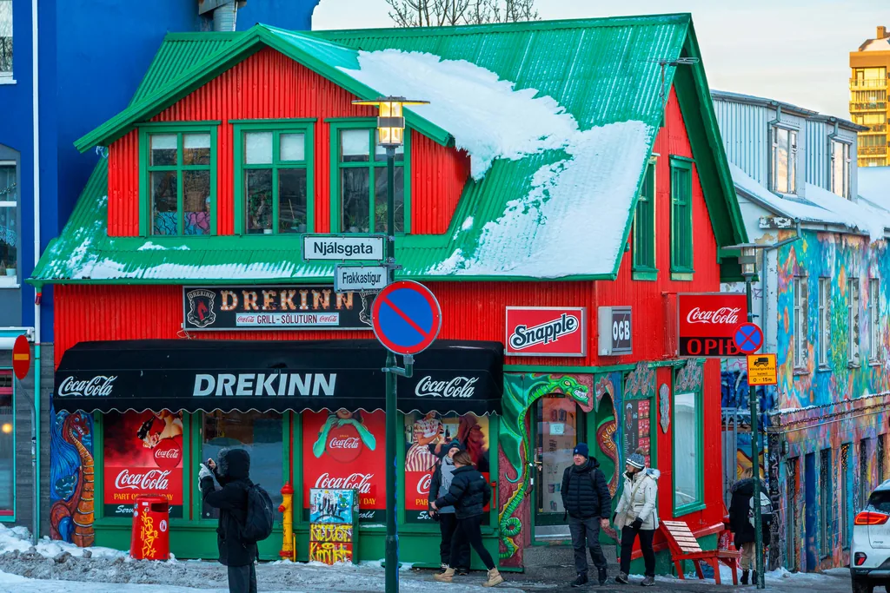
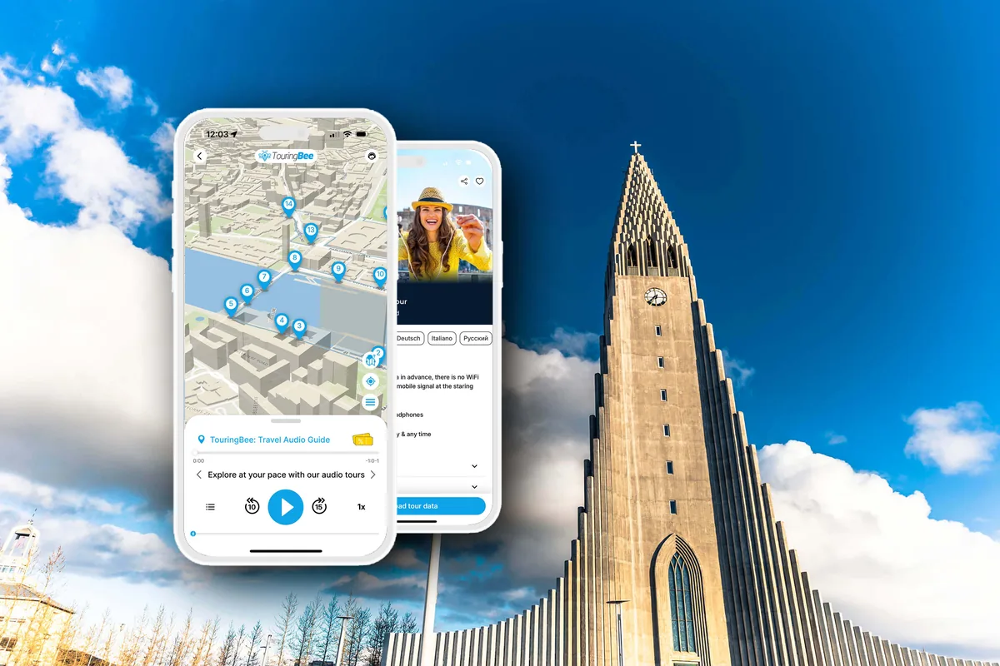

Reykjavik › Dall'aeroporto di Keflavík al centro
Dall'aeroporto di Keflavík a Reykjavik: le opzioni e quale sta bene con la tua ora di atterraggio
Cinquanta chilometri, una strada, quarantacinque minuti. Il transfer è la parte facile; il buco fra atterraggio e check-in no.
Da Keflavík a Reykjavik c'è una sola strada e ci vogliono circa 45 minuti. Il pullman dell'aeroporto regola le partenze sui voli in arrivo: di solito parte 35-45 minuti dopo un atterraggio, con un orario che comincia verso le 03:30 e arriva a tarda sera. Entrare in città è un problema risolto.
Non è risolta l'ora in cui tocchi terra. A Reykjavik il check-in in hotel è di norma alle 14:00 o alle 15:00. Se atterri prima, arrivi in città con le valigie, una camera chiusa e diverse ore da riempire — ed è questo, non i 50 km, a decidere quale biglietto ti conviene.
Perciò questa pagina fa entrambe le metà: le opzioni di transfer con i prezzi che gli operatori fanno davvero, e poi cosa fare del buco. Se il buco ti lascia in centro con del tempo, il nostro itinerario di un giorno e la passeggiata audio di TouringBee sono costruiti esattamente per quelle ore. Stai montando tutto il viaggio? Parti dalla guida completa di Reykjavik.
In breve
- Distanza
- Circa 50 km dall'aeroporto al centro di Reykjavik
- Viaggio
- Circa 45 minuti in pullman o in auto
- Flybus
- Da 3.999 ISK a tratta fino al terminal BSÍ
- Autobus di linea
- Strætó 55 — 2.400 ISK adulti, 1.200 ISK ridotto, gratis sotto i 12 anni
- Partenze
- Flybus segue gli arrivi, all'incirca dalle 03:30 a tarda sera; Strætó va a orario fisso
- Prenotazione
- Di solito non serve. I biglietti si comprano in aeroporto
- Bagagli
- Chiedi prima in hotel; depositi in aeroporto e al BSÍ
- Il vincolo vero
- Il check-in alle 14:00–15:00, non il transfer
Atterri presto? Quella è la finestra della passeggiata
La passeggiata audio di TouringBee è 27 tappe, 2–2,5 ore nel centro storico, con mappa e audio offline. Sistemate le valigie, le ore morte prima del check-in diventano la parte migliore del primo giorno.
Audioguida di Reykjavik — 9,99 €Parti dalla tua ora di atterraggio, non dal prezzo
Tutte le guide su questa tratta confrontano le tariffe. Ma il prezzo è solo metà del conto: un biglietto economico smette di essere conveniente nel momento in cui il suo orario ti aggiunge un'ora di attesa.
Chiediti piuttosto: a che ora toccano le ruote e dove dormi? Atterri a mezzogiorno con la camera pronta alle due e va bene qualunque cosa. Atterri alle sei del mattino e ti serve un piano per i bagagli e uno per te. L'autobus più economico non copre tutti i voli, quindi può costarti un'ora che avresti preferito spendere altrove.
| Opzione | Prezzo | Arriva a | Quando è la tua |
|---|---|---|---|
| Flybus | da 3.999 ISK a tratta | Terminal BSÍ | Predefinita. Partenze legate agli arrivi; se sei in ritardo il posto passa al bus successivo |
| Flybus+ | supplemento | Hotel convenzionati | Tanti bagagli, bambini, maltempo o alloggio fuori centro |
| Airport Direct | tariffa da verificare | Terminal centrale, premium fino all'hotel | Il secondo pullman di linea: vale il confronto di prezzo con Flybus |
| Strætó 55 | 2.400 ISK adulti | BSÍ o Fjörður | Di giorno, bagagli leggeri, se l'orario coincide |
| Taxi o transfer privato | A tassametro o su preventivo | La tua porta | Siete in tre o quattro, oppure l'ora è scomoda |
| Auto a noleggio | Tariffa giornaliera | Dove vuoi | Solo se poi esci dalla città |
Il Flybus, e perché è l'opzione predefinita
È il pullman dell'aeroporto che prende la maggior parte delle persone, e quello che vende non è la velocità ma la certezza. Le partenze seguono i voli in arrivo invece di un intervallo fisso: di solito 35-45 minuti dopo un atterraggio. L'orario pubblicato comincia verso le 03:30 e arriva a tarda sera, quindi per un volo molto presto o molto tardi controlla l'orario della tua data invece di affidarti alla regola generale.
Se il volo è in ritardo l'operatore non trattiene il bus per te: ti garantisce un posto sulla partenza successiva, senza costi aggiuntivi. È una differenza che conta, e conviene conoscerla prima di agitarsi in fila al controllo passaporti. La tariffa comprende due bagagli fino a 23 kg ciascuno.
Il biglietto standard finisce al BSÍ, l'autostazione sul margine sud del centro. Flybus+ aggiunge una tratta in minibus fino agli hotel convenzionati, con supplemento. Si ripaga con bagagli pesanti, con bambini, col maltempo e quando l'alloggio è in periferia.
Se viaggi leggero e stai nel centro storico vale la pena confrontare: il minibus percorre una lista di indirizzi e il tuo potrebbe non essere il primo. Guarda quanto dista il tuo hotel dal BSÍ e decidi in base a quello, non per automatismo.
Strætó 55, l'opzione economica e la sua fregatura
L'autobus di linea è il 55 e costa 2.400 ISK per un adulto: 1.200 ISK per i 12-17 anni, gli over 67 e i passeggeri con disabilità, gratis sotto i 12. Per una famiglia quella differenza sono soldi veri.
Due fregature. Va a orario e non sul tuo volo, quindi un atterraggio alle 05:30 può significare una lunga attesa. E non tutte le corse finiscono al BSÍ: alcune terminano a Fjörður, a Hafnarfjörður, un comune a sud di Reykjavik che non è decisamente il centro. Controlla il capolinea prima di salire, non dopo.
Transfer privati ed escursioni
Se siete in tre o quattro, calcola la tariffa del bus a testa contro un solo mezzo prima di dare per scontato che il pullman costi meno. I transfer privati e le escursioni che passano da Keflavík si prenotano in anticipo.
Confronta i transfer Biglietti a ReykjavikIl taxi, e quando la distanza si accorcia
I taxi islandesi vanno a tassametro e non esiste una tariffa fissa pubblicata per l'aeroporto: trattalo come l'opzione cara e chiedi una stima prima di salire.
In tre o quattro, fatti dare una stima aggiornata e confrontala con il totale dei biglietti del bus. Il taxi si paga a mezzo, il bus a passeggero, quindi la distanza si accorcia man mano che il gruppo cresce. Questo non rende il taxi economico, solo più vicino di quanto sembri a chi viaggia da solo.
L'auto a noleggio, onestamente
Per il solo transfer no. È una strada dritta che farai una volta e, in fondo, un'auto da parcheggiare in una città che si attraversa a piedi. Il noleggio inizia ad avere senso quando l'aeroporto è l'inizio di un viaggio su strada: Circolo d'Oro, costa sud, qualsiasi cosa fuori dalla capitale. Decidi sul viaggio, non sul transfer.

Il buco fra atterraggio e check-in
Questa è la parte che nessuno pianifica e contro cui finiscono tutti. La camera non è pronta prima delle due del pomeriggio. Il volo è atterrato alle sei del mattino. Alle otto sei in centro con una valigia.
I bagagli sono la metà facile, e la prima mossa è quella che si dimentica: chiedi al tuo hotel. Una camera non pronta non è la stessa cosa di un hotel che non può fare niente, e la maggior parte tiene le valigie fino al check-in senza farle pagare. In più la valigia resta dove dormirai, il che batte qualsiasi armadietto.
Se la risposta è no, o hai preso un appartamento senza reception, ci sono depositi a Keflavík e al BSÍ. Quelli del BSÍ sono aperti 24 ore, con 96 armadietti di quattro misure, più di quanto offrano le stazioni di queste dimensioni.
Le ore sono la metà migliore, perché il centro storico si attraversa in una ventina di minuti e non ha bisogno di una camera d'albergo per piacere. Un buco di quattro o cinque ore contiene la passeggiata da 2 a 2,5 ore attorno a cui è costruito questo sito e lascia ancora spazio per colazione e un caffè lungo. I bar aprono molto prima dei banconi della reception.
Tre tempistiche
Se atterri presto
Il Flybus, perché le sue partenze seguono gli arrivi. Bagagli sistemati, colazione in centro e cammini appena fa luce: attorno al solstizio d'inverno non succede prima delle undici circa, quindi metti in conto prima un'ora al caldo al chiuso.
Se atterri tardi
Ancora il Flybus: l'orario arriva a tarda sera e le ultime partenze sono agganciate agli arrivi tardivi, cosa che l'autobus di linea non fa. Controlla comunque l'ultima corsa della tua data. Se atterri dopo che i pullman hanno chiuso, il taxi non è uno sfizio: è l'unica cosa rimasta.
Se riparti presto
Conta all'indietro dal banco del check-in, non dal gate, e aggiungi i 45 minuti più quello che costa il prelievo in hotel. Le partenze all'alba significano pullman che lasciano la città nel cuore della notte: l'orario del Flybus le copre, l'autobus urbano no.
L'audioguida
Avrai ore in centro prima che qualcuno ti dia una chiave. Camminarle è ovvio. Sapere perché la città stia proprio lì e perché la passeggiata cominci da quella collina è la parte che devi portarti dietro.

Audioguida TouringBee di Reykjavik
- Entra nelle ore morte. Due o due ore e mezza, più o meno quello che hai prima del check-in
- Funziona del tutto offline una volta scaricata, utile prima di aver risolto i dati in un paese nuovo
- Con i tuoi tempi. Fermati per colazione e riprendi da dove eri
- Un pagamento solo. Nessun gruppo, nessun orario, nessuna guida che ti aspetta
Prezzi: transfer, bagagli e passeggiata
| Voce | Costo |
|---|---|
| Strætó 55, adulti | 2.400 ISK |
| Strætó 55, 12–17, over 67, disabilità | 1.200 ISK |
| Strætó 55, sotto i 12 anni | Gratis |
| Flybus fino al BSÍ, sola andata | da 3.999 ISK |
| Airport Direct | Verifica la tariffa con l'operatore |
| Flybus+ con consegna in hotel | Supplemento; verifica con l'operatore |
| Taxi | A tassametro, nessuna tariffa fissa pubblicata per l'aeroporto |
| Deposito bagagli | In aeroporto e al BSÍ, 24 ore |
| Audioguida per il buco | 9,99 €, pagamento unico, un anno di accesso |
Cinque errori
- Scegliere solo sulla tariffa. Controlla prima l'ora di atterraggio e l'orario: l'opzione economica può aggiungere una lunga attesa.
- Dare per scontato che il bus di linea copra il tuo volo. Va a orario; il Flybus va sugli arrivi.
- Salire su un 55 senza guardare il capolinea. Alcune corse finiscono a Fjörður, non al BSÍ.
- Pagare Flybus+ per automatismo. Se l'hotel è vicino al BSÍ e i bagagli sono leggeri, confronta prima la camminata col giro del minibus.
- Noleggiare l'auto per il transfer. Prendila il giorno in cui esci dalla città, non il giorno in cui atterri.
Domande frequenti
Qual è il modo più economico per andare da Keflavík a Reykjavik?
L'autobus di linea, Strætó 55, a 2.400 ISK per un adulto. I ragazzi dai 12 ai 17 anni, chi ha più di 67 anni e i passeggeri con disabilità pagano 1.200 ISK, i bambini sotto i 12 viaggiano gratis. Circola tutti i giorni ma non a ogni arrivo, e non tutte le corse finiscono al BSÍ: alcune terminano a Fjörður, a Hafnarfjörður, che non è il centro città.
Quanto ci vuole da Keflavík a Reykjavik?
Circa 45 minuti in pullman per una cinquantina di chilometri, più o meno lo stesso in auto. Il tempo non se ne va nel viaggio. Se ne va aspettando il bus, che parte 35-45 minuti dopo l'atterraggio, e poi aspettando di nuovo, perché la camera non sarà pronta prima del pomeriggio.
Bisogna prenotare il bus in anticipo?
Di solito no. Flybus vende i biglietti in aeroporto oltre che online, e le partenze seguono i voli in arrivo. Il biglietto online fa risparmiare qualcosa, evita la fila dopo un volo lungo e conviene nelle date affollate. Se il volo è in ritardo, l'operatore sposta il tuo posto sulla partenza successiva invece di trattenere il bus.
Il Flybus arriva fino al mio hotel?
La tariffa base ti porta al terminal BSÍ. Flybus+ prosegue in minibus fino agli hotel convenzionati, con un supplemento. Se alloggi nel centro storico, il biglietto normale più una breve camminata è spesso più veloce che aspettare il giro del minibus.
Vale la pena noleggiare un'auto solo per il transfer?
Da sola no. Una strada, 45 minuti e, in fondo, un'auto da parcheggiare in una città che si attraversa a piedi. Il noleggio inizia ad avere senso quando l'aeroporto è l'inizio di un viaggio su strada: Circolo d'Oro, costa sud, qualsiasi cosa fuori dalla capitale. La domanda vera è se esci dalla città.
Dove lascio i bagagli prima del check-in?
Parti chiedendo in hotel: una camera non pronta non significa un hotel che non può aiutarti, e la maggior parte tiene le valigie fino al check-in senza farle pagare. Altrimenti ci sono i depositi a Keflavík e al BSÍ, quelli del BSÍ aperti 24 ore con 96 armadietti di quattro misure.
Continua a leggere
- Reykjavik in un giorno — cosa fare delle ore che hai appena liberato
- Hallgrímskirkja e la torre — biglietti, orari e il limite delle 16:45
- La guida completa di Reykjavik — la passeggiata, le escursioni e le stagioni
- Tutte le guide di Reykjavik
In due righe
Prendi il Flybus se non hai motivi per fare altrimenti: le partenze seguono i voli, in caso di ritardo il posto passa alla corsa dopo e ti lascia al margine del centro per 3.999 ISK. Prendi il 55 se l'orario coincide e conti ogni corona. Prendi l'auto solo se esci dalla città.
Poi sistema i bagagli e usa le ore. Se preferisci capire la città invece di aspettarci dentro, portati l'audioguida TouringBee: 27 tappe, 2–2,5 ore, tutto offline.
La camera non sarà pronta prima delle due
La passeggiata dura due ore e mezza. Il conto si fa da solo.
Alcuni link di questa pagina sono affiliati: se prenoti passando di qui possiamo ricevere una commissione, senza costi aggiuntivi per te. Tariffe e orari verificati sui siti degli operatori a ottobre 2026; cambiano senza preavviso, controllali prima di partire. Flybus: flybus.is. Autobus di linea: straeto.is.